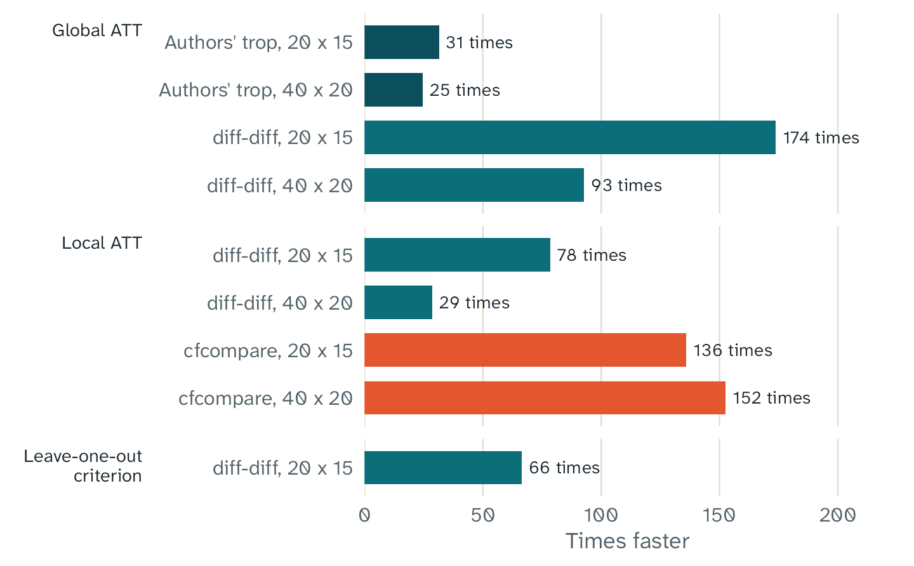

Key points
- We wanted fasttrop to be fast, because one TROP analysis calculates thousands of fits.
- The model fits run in C, and they can use more than one thread. For a 20 by 12 panel with fixed tuning parameters and no bootstrap, the R code added 0.8 to 1.7 ms to each call.
- In our benchmarks with one thread and fixed tuning parameters, fasttrop was 25 to 174 times faster than the Python packages. It was 136 to 152 times faster than an R package that uses only R code.
- The times depend on your computer.
Why speed matters
One TROP estimate is fast. The time goes to the steps around the estimate:
- The leave-one-out criterion calculates a new fit for each untreated cell that it uses, for each candidate value of the tuning parameters.
- The bootstrap calculates the full estimate again for each draw.
- The local method calculates a separate fit for each treated cell.
The example on the home page has 40 treated cells. Its cross-validation examines 200 cells at each of 28 grid points. Its bootstrap calculates 200 more estimates. In total, the example calculates approximately 14,000 weighted fits.
In our benchmark, one fit for a panel of this size took approximately
8 ms with fasttrop on one thread. It took approximately 0.23 s with
diff-diff in Python. If we scale these times to 14,000
fits, the difference is approximately 2 minutes against approximately
one hour. This is a scale-up of one benchmark, not a measured run of the
example.
What makes fasttrop fast
- All model fits are in C, in the file
src/trop_core.c. The C code does not call R while it runs. R prepares the data, draws the samples, and calculates the standard error and the interval. - Independent fits run on more than one thread at the same time, with OpenMP. The number of threads does not change the results.
- fasttrop uses the BLAS and LAPACK libraries of R. If R uses a faster BLAS library, fasttrop also uses it.
- The default solver is an accelerated method. It usually uses fewer of its most costly steps, the singular value decompositions, than the solver of the reference implementations.
- The fit for a cell starts from the solution for the previous cell of the same unit.
A comparison with other implementations
We compared fasttrop with the other implementations of TROP on the same two panels and with the same fixed tuning parameters. Each package used its default solver options. The panels had 20 units and 15 periods, and 40 units and 20 periods.

How many times faster fasttrop with one thread was than each other implementation, on the same panels and with the same fixed tuning parameters. The leave-one-out criterion is one evaluation for all 284 untreated cells. The cfcompare bars are not exactly the same calculation, because its ATTs differed by up to 0.006. The authors’ package has only the global method, and cfcompare has only the local method.
| Task | Panel | fasttrop, 1 thread | fasttrop, 4 threads | Authors’ trop
|
diff-diff |
cfcompare |
|---|---|---|---|---|---|---|
| Local ATT | 20 x 15 | 0.044 s | 0.016 s | 3.42 s | 5.93 s | |
| Local ATT | 40 x 20 | 0.33 s | 0.088 s | 9.33 s | 49.7 s | |
| Global ATT | 20 x 15 | 0.0032 s | 0.0040 s | 0.100 s | 0.551 s | |
| Global ATT | 40 x 20 | 0.010 s | 0.0084 s | 0.252 s | 0.951 s | |
| One evaluation of the leave-one-out criterion, 284 cells | 20 x 15 | 0.85 s | 0.20 s | 56.6 s |
An empty cell shows that the package does not have the method. The
ATTs of fasttrop and the two Python packages had a difference of less
than 1e-5. The ATTs of cfcompare had a difference of up to
0.006. Thus, cfcompare does not calculate exactly the same
value. diff-diff ran in Python only, because its optional
Rust code was not available. With the Rust code, its times can be
shorter.
R adds almost no time
To measure the cost of the R code, we wrote a C program that uses the same C core as the package. The program runs the same calculations as R, with the same sampled cells and the same bootstrap draws. Its results are the same as the results of the package, bit for bit.
We examined the runs of one second or more. For these runs, the ratio of the R time to the C time had a geometric mean of 1.012. Its 95% interval was 0.983 to 1.041. Thus, in the limits of the measurement, the package has the same speed as a pure C program. For a 20 by 12 panel with fixed tuning parameters and no bootstrap, the full R call added 0.8 to 1.7 ms in our benchmark. A call with tuning or a bootstrap can add more R time.
More threads
The table gives the time of the full R call with one thread and with four threads, for four workloads. The values are medians of three rounds.
| Workload | 1 thread | 4 threads | Times faster |
|---|---|---|---|
| local, fixed lambda, no SE, 20x12 | 0.022 s | 0.006 s | 3.4 |
| local, fixed lambda + bootstrap (B=100), 30x20 | 15.7 s | 3.7 s | 4.2 |
| local, LOOCV (60 cells) + bootstrap (B=50), 30x20 | 4.7 s | 1.1 s | 4.1 |
| global, placebo CV (50 sets) + bootstrap (B=200), 50x30 | 7.8 s | 1.9 s | 4.1 |
With four threads, each workload was 3.4 to 4.2 times faster than with one thread. The times have some noise, so a value above 4 is possible.
How to make your runs faster
- Use more threads. The default is the number of physical cores. To
set it, use
trop_control(threads = 8). - Use a sample of cells for the leave-one-out criterion, for example
cv_cells = 200. Withcv_cells = NULL, the criterion uses all untreated cells. This uses all the data, but it takes more time. - Use a smaller grid of tuning parameters with
trop_grid(). - When you explore the data, use fewer bootstrap draws, or
se = "none". For the final result, use more draws. - When you repeat an analysis with the same tuning parameters, set
lambda. Then fasttrop does not run the cross-validation.
The global method is also faster, because it calculates one fit for all treated cells. But it is a different estimator, and it works only for a block design. Do not select it only for speed.
Windows power throttling
Windows can use power throttling on a process that runs in the
background for a long time. This can make a long calculation in R
slower. Thus, the threads of fasttrop tell Windows not to use power
throttling while the C code runs. When the C code stops, Windows
controls the threads again. To keep the usual Windows policy, use
trop_control(throttle = TRUE). This option does not change
the results, and it has no effect on other operating systems.
Your times can be different
The times on this page depend on the computer, the compiler, the BLAS
library, and the number of threads. Other work on the computer also
changes the times. All benchmarks used the reference BLAS and LAPACK
libraries of R. The folder inst/bench of the source package
has the scripts, so you can measure the times on your own computer.